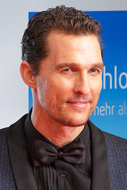

|
Кэри Фукунага
Фукунага, Кэри. Кэ́ри Джо́джи Фукуна́га (англ. Cary Joji Fukunaga; род. 10 июля 1977, Окленд, Калифорния, США) —
американский кинорежиссёр, сценарист и кинооператор. Наиболее известен как режиссёр и сценарист фильма 2009 года «Без имени»
(за который он выиграл премию за лучшую режиссёрскую работу на кинофестивале «Сандэнс»),
фильма 2011 года «Джейн Эйр» и как режиссёр и исполнительный продюсер сериала 2014 года канала HBO «Настоящий детектив»
(за который он выиграл премию «Эмми» за лучшую режиссуру драматического сериала в 2014 году)Фукунага снял все
восемь эпизодов первого сезона сериала канала HBO «Настоящий детектив», сценаристом и создателем которого является романист,
писатель-фантаст и сценарист Ник Пиццолатто.Главные роли в сериале сыграли Мэттью Макконахи, Вуди Харрельсон.
Фукунага также был исполнительным продюсером шоу. Сериал получил похвалу от критиков и был номинирован на 5 премий «Эмми»,
включая лучший драматический сериал и лучшую режиссуру Фукунаги. Над втором сезоном «Настоящего детектива» Фукунага работал
только в качестве исполнительного продюсера.
Мэттью Макконахи

Мэ́ттью Дэ́вид Макко́нахи (англ. Matthew David McConaughey; род. 4 ноября 1969, Ювалде, Техас) — американский актёр,
сценарист, режиссёр и продюсер. Поначалу зарекомендовав себя как актёра в основном комедийного амплуа, во втором
десятилетии XXI века Макконахи перешёл к крупным драматическим ролям, удостоившись ряда наград и положительных отзывов
от кинопрессы за картины «Линкольн для адвоката», «Мад», «Киллер Джо», «Супер Майк», «Интерстеллар».
Мэттью Макконахи родился 4 ноября 1969 года в Техасе и был младшим сыном в семье. Его мать Мэри Кэтлин (в девичестве Макгейб)
работала воспитательницей в детском саду, позже стала писательницей. Его отец, Джеймс Дональд Макконахи был владельцем
автозаправки. У него шотландские, английские, ирландские, шведские и немецкие корни. Вырос в городе Лонгвью.
Окончил школу в 1988 году и поступил в Техасский университет в Остине c явным намерением стать адвокатом.
Год учился в Австралии по программе обмена. Перед одним из своих последних экзаменов он был вдохновлён книгой
Ога Мандино «Лучший продавец в мире» и твёрдо решил поменять специализацию с юриспруденции на кинематограф.
Актёрскую карьеру начал в 1991 году, появляясь в рекламных роликах. Спустя два года получает роль в фильме
Ричарда Линклейтера «Под кайфом и в смятении». Фильм получил положительные отзывы и приобрел культовый статус,
особенно в университетских городках США. Квентин Тарантино включил его в свой список 12 величайших фильмов в
истории для журнала «Sight & Sound». После последовали второстепенные роли в таких фильмах, как «Техасская резня
бензопилой 4: Следующее поколение», «Ангелы у кромки поля», «Парни побоку». Макконахи также сыграл главную роль в клипе
Триша Йервуд на песню «Walkaway Joe». Свою первую главную роль сыграл в фильме Джоэла Шумахера «Время убивать», по
одноимённому роману Джона Гришэма. В конце 90-х также играл главные роли в фильмах «Контакт», «Амистад», «Эд из телевизора»,
«Ю-571» и «Братья Ньютон».В начале 2000-х он снимается в романтических комедиях «Свадебный переполох» и «Как отделаться от
парня за 10 дней», вместе с Дженнифер Лопес и Кейт Хадсон соответственно. В промежутке он играет в мелодраме «Маленькие
пальчики» вместе с Кейт Бекинсейл и Гэри Олдменом, в фантастике «Власть огня» с Кристианом Бейлом и Джерардом Батлером,
в триллере «Деньги на двоих» он сыграл вместе с Аль Пачино и Рене Руссо, а также сыграл серийного убийцу в фильме «Порок».
В 2009 году выходит фильм «Призраки бывших подружек» о ловеласе, к которому приходят призраки всех его подружек. Через два
года выходит детектив «Линкольн для адвоката». Фильм рассказывает о блестящем и удачливом адвокате из Лос-Анджелеса, чей
яркий имидж и образ жизни отлично дополняет его любимая машина «Линкольн». Он берется за очередное дело в котором не всё чисто,
по ходу дела его подставляют и теперь он хочет выяснить, кто это сделал. В этом же году Макконахи вместе с Джеком Блэком и
Ширли Маклейн снялся в чёрной комедии «Берни», а также сыграл продажного полицейского и наемного убийцу в триллере «Киллер Джо».
В начале 2012 года Макконахи вместе с Ченнингом Татумом снимается в фильме Стивена Содерберга «Супер Майк». Фильм частично
основан на реальных событиях, которые происходили с Татумом, который в 19 лет подрабатывал стриптизером в Тампе, Флорида.
Картина имела успех у критиков и собрала в мировом прокате 167 млн долларов при бюджете в 7 млн. Также актёр снимается в
драмах «Газетчик» и «Мад». Последний фильм принимал участие в конкурсной программе Каннского кинофестиваля.Женат на бразильской
модели Камиле Алвес. У пары трое детей: дочь Вида и сыновья Леви и Ливингстон.
Вуди Харрельсон
Ву́ди Ха́ррельсон(англ. Woody Harrelson; настоящее имя Вудроу Трэйси Харрельсон, Woodrow Tracy Harrelson;
род. 23 июля 1961, Мидленд, Техас) — американский актёр, продюсер и драматург, обладатель премии «Эмми» (1989),
двукратный номинант на премию «Оскар» (1997, 2010), четырёхкратный номинант на «Золотой глобус» (1997, 2010, 2013, 2015).
Харрельсон родился в Мидленде, Техас, в семье Чарльза Харрельсона и Дайаны Лу Освалд, которые развелись в 1964 году, когда
Вуди было 3 года. Был средним сыном в семье, имеет двух братьев Джордана и Бретта. Когда ему исполнилось 7 лет, отца посадили
в тюрьму за убийство. Спустя 10 лет (в 1979 году) Чарльз Харрельсон был обвинён в убийстве окружного судьи Джонатана Вуда и
получил два пожизненных срока.В 1973 году Харрельсон переехал к своей матери в город Ливан в штате Огайо, где и вырос.
Харрельсон учился в средней школе Ливана, а также изучал английский язык и актёрское мастерство в Ганновер Колледж (англ.
Hanover College) в Индиане. Он получил степень бакалавра искусств по английскому языку и актёрскому мастерству в 1983 году.
Стал известен после роли Вуди Бойда в телевизионном комедийном сериале «Чирс». Первой главной ролью в кино был Билли Хойл в
фильме «Белые люди не умеют прыгать», также известен по ролям серийного убийцы Микки Нокса в фильме «Прирождённые убийцы»
(1994, реж. Оливер Стоун), издателя журнала Ларри Флинта в фильме «Народ против Ларри Флинта» (1996, реж. Милош Форман),
кантри-певца Dusty в фильме «Компаньоны», охотника Карсона Уэллс в фильме «Старикам тут не место», убийцы зомби Таллахасси
в фильме «Добро пожаловать в Зомбилэнд» и слепого пианиста/продавца мяса Эзры Тернера в фильме «Семь жизней». Он также появился
в роли Хеймитча Эбернети в фильмах «Голодные игры» (2012 год) и «Голодные игры: И вспыхнет пламя» (2013 год). А также в роли
Чарли Костелло в фильме «Семь психопатов» (2012 год) и Мерритта Маккинни в фильме «Иллюзия обмана» (2013 год).Вуди Харрельсон
официально женат дважды.
|